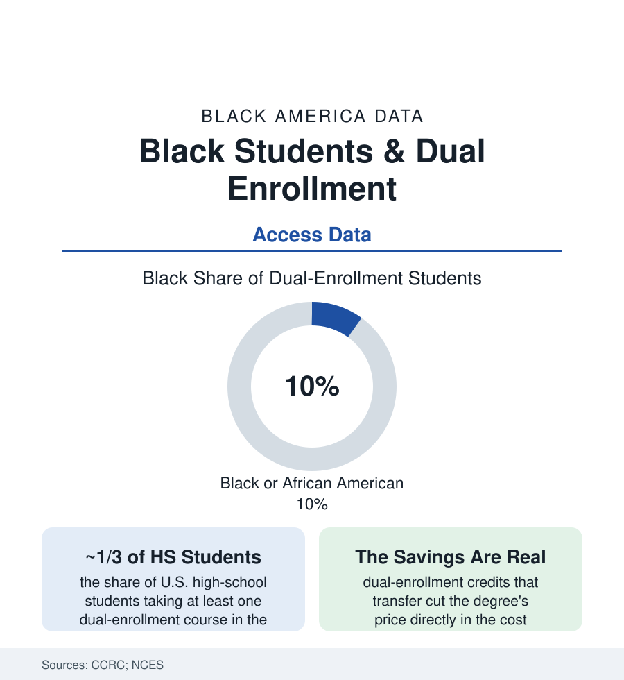

Black Education
Dual Enrollment: College Credit in High School, Unevenly Dealt
A third of U.S. high schoolers now earn college credit before graduating — Black students at lower rates, through a gate that runs on information as much as grades. The CCRC data.

Dual enrollment — high school students taking real college courses for real credit, usually at the community college — has quietly become one of American education's largest programs: about a third of high school students now take at least one such course in the federal data, and the research consensus credits it with raising college enrollment and completion for the students who get it. Black students participate at about ten percent of the dual-enrollment population against fourteen percent of high schoolers — a modest-looking gap sitting on a mechanism (who hears about it, whose credits transfer, whose courses count) that this article reads closely.
The Participation Funnel
The CCRC's state-by-state tracking draws the funnel's shape: the eligibility gates first (the GPA and placement-score thresholds — the placement file's instruments again, sorting by the preparation the funding file rations), the course-location split second (dual enrollment delivered at the high school by credentialed teachers versus at the college campus — the high-school-based courses enrolling more Black and low-income students in the program data, the campus-based carrying the fuller college exposure and the stronger transfer record), and the subject split third (the career-technical dual credits against the academic-transfer credits — Black students' dual enrollment skewing toward the CTE side in the program data, valuable and differently portable). The information gate runs through all of it in the qualitative record: the counselor's mention, the family that knows to ask, the fee-and-textbook line items in the states that charge them (the state-policy map varying from fully funded to family-paid — the program's equity substantially a statehouse variable in the policy data), and the transportation to the campus sections of the rural and urban files alike.
The Transfer Problem: Credits That Don't Travel
Dual enrollment's promise is the credit, and the credit's value is set by the receiving institution — the transfer data's fine print: the four-year colleges' acceptance of dual credits varying by selectivity (the elite file's institutions the most restrictive in the transfer-credit audits — the applicability of the credit to the degree, as opposed to its transcription as electives, the operative distinction), the state articulation systems' guarantees (the common-course-numbering and guaranteed-transfer states in the policy data — the family's protection priced by state), and the advising record at the sending end (the students stacking credits that scatter against the students sequenced into a pathway — the guided-pathways design's dual-enrollment form). The outcome analyses hold the encouraging line with the necessary asterisks: dual-enrollment participants enrolling in college at higher rates and completing at higher rates in the NSC and state longitudinal data, Black participants sharing the premium in the disaggregated analyses where the sample allows — the program working for those it reaches, the reach remaining the finding. The HBCU dual-enrollment partnerships in the current record (the early-college high schools on and with HBCU campuses — the North Carolina and Texas early-college models' documented graduation-and-degree results, several of them majority-Black by design) stand as the file's existence proof of the aimed version.
The Policy Levers and the Equity Audits
The states' recent legislation is the file's active front: the funding formulas moving dual enrollment from family-paid to state-paid in state after state (the participation responses in the program data — the Black enrollment share moving with the price, the barrier research's cleanest natural experiment), the eligibility reforms (the multiple-measures and GPA-based gates replacing the single-test screens, their equity audits published), the reporting mandates (the states now publishing dual-enrollment participation by race and school — the transparency that made this article's tables possible), and the middle-and-early-college expansions. The design cautions ride in the same literature: the rigor question (the high-school-delivered courses' comparability audits), the credential supply (the master's-degreed teacher pipeline for the high-school-based model — the faculty file's K-12 edge), and the completion focus (the metric shift from credits attempted to credits that count). The direction of the recent data is genuinely encouraging — participation climbing, gaps narrowing in the funded states — at the pace the education file usually allows: a few points a year, state by state, gate by gate.
Reading the Dual-Enrollment Data
A third of the nation's high schoolers are already in college, at a discount, while still in high school: dual enrollment is the rare reform with the evidence, the scale, and the savings all on one side of the ledger — and a participation map drawn, as ever, by information and price. The states that funded it and published it are watching the gap close in their own tables. That is what the aimed version looks like from inside the data.
More in Black Education
Black Educational Attainment: High School Parity, the College Gap
About 89 percent of Black adults hold a high school diploma and one in four holds a bachelor's degree or higher — the attainment ladder, the college completion gap, and the generational trend.
Historically Black Colleges and Universities: Enrollment and Degrees
More than 100 HBCUs enroll roughly 290,000 students and award about one in six Black bachelor's degrees — an outsized share from a small sector. The federal education data.
Black College Enrollment: 2.4 Million Students
About 2.4 million Black students are enrolled in American colleges — nearly two-thirds of them women. The NCES enrollment data by sector, level, and trend.
Source: Community College Research Center, Columbia University; National Center for Education Statistics; National Student Clearinghouse Research Center; state dual-enrollment program data.